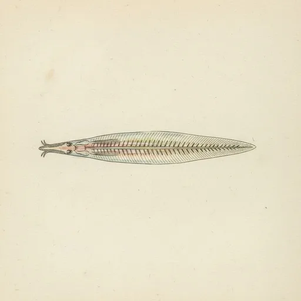

Weekly poems
-

Limits, Renames, and Job Handles
This week three libraries shipped some change, So let us give the notes a range. LanceDB ran from beta eighteen, To twenty-six, a busy scene.
-

Renamed Rules and Retired Pythons
This week in the repo, a few things will bite, so read before upgrading tonight.